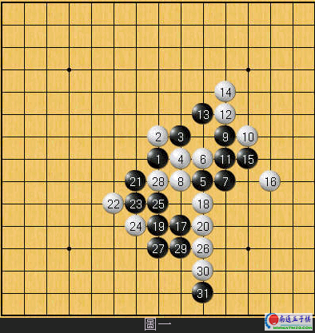
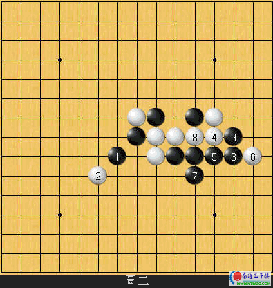
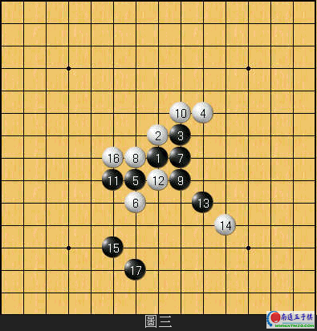
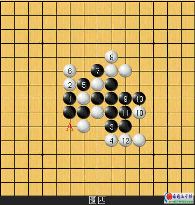
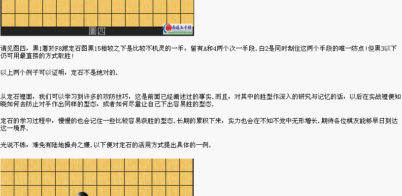

定石的著想
#1 定石的著想 作者：有志青年 发表时间：2007-3-29 13:28:10
跟围棋一样,五子棋也有定石.
什麼是定石?
定石是经过前人努力研究所传下来的结晶,是一座满载著许许多多棋理与攻防技巧的宝库.本文為笔者多年来对定石的一篇小小心得,如能对读者提升棋力有所帮助,则幸甚矣!
在广大五子棋爱好者中,不乏有许多对定石很好奇,想学定石的棋友.这一点从奇摩知识+当中有很多人在询问哪边有定石的网站可以看得出来.然而,要初阶棋手一下子就去理解定石裡面的棋理与攻防技巧,实在是不太合理也不可能的事情.学到后来,因為看不懂,无法理解為什麼定石会这样下的缘故，而沦為死背定石手顺的牺牲者.
台湾目前有出版对提升初阶棋手实力相当有帮助的两本书--<<五子棋入门>>和<<五子棋窍门>>.我们先来看一下<<五子棋入门>>这本书的内容，很明显的，这本书著重於对基本棋理的理解与一些攻防技巧的介绍，对"定石"反而没有多大的著墨;而<<五子棋窍门>>这本书裡面也是从开头到差不多整本书五分之四的版面都在讲述基本进攻与防守的技巧，一直到了第五章才稍微解说了花月和浦月定石的一些变化.这样的编排方式不难看出作者的苦心.
那麼，得知自己是否已经到达可以研习定石的层级了呢?笔者在此提出一个可供参考用的方案，那就是请您先移驾至"Sataka puzzles book"(网址是http://users.lk.net/~stepanov/renju/sakata.html)这个网页,裡面有一百道题目等著您去解答.基本上这一百道题目如果您只用眼睛目算就可以答对六十题以上的话，这代表您五子棋的基础算路十分不错，即使去看定石也必定能对内容掌握某种程度的理解.还未达到这个程度的棋友也不用灰心，笔者还是强烈建议您先加强自身的细算能力和攻防技巧，否则贸然去学定石很容易变成死背.
很多人都知道，即使是在日式规则裡面，五子棋仍然逃不了"先手必胜"的命运.而由於定石摆的都是黑胜的谱，导致许多爱好者对定石產生一种错误的联想，以為黑会必胜是因為下了定石，如果下了偏离定石的变化必定不会必胜而让白方有机可乘!
网路可以说是另一个变相的社会，很多人都希望自己是别人心目中的高手，為了达到这个目的，有些人无耻的使用软体;有些人则因為偷懒而去死背定石.
几天前在奇摩试玩间也看到一个例子，某位学了一点定石的棋友，他可能觉得自己很厉害而开了一桌"五子棋定石教学桌".一时兴起笔者也加入这桌当起了观眾.一看之下，云月定石他执黑，兴高采烈的炫燿这裡定石是下哪裡......突然间，对方下了一步他没背到的变化!只见他一声惨叫"阿~!这裡的变化我不太清楚耶~~完蛋了，输定了啦!"紧接著连下了几步无关紧要的弱著，糊裡糊涂的败下阵来.
这是很明显的一个死背定石的例子.很多人都认為定石是绝对必要的，不照著定石下就很难赢而且会被认為是肉脚.
以下，笔者便提出几个例子来证明给各位看看，定石是否真的那麼绝对?如果您手边有<<五子棋窍门>>这本书的话，麻烦您翻开第190页跟我这边做个对照.

图一為花月定石的一个变化,黑11以下使用了相当高难度且复杂的手顺来取胜,但黑如果真的只是想赢的话,其实不需要如此大费周章.详情请见图二.

黑1活三是有别於定石黑11的下法,白2下防必然(如上防则黑先F6衝四之后於H6佈子白无应手).接者黑下3位四三前一手简单就必胜了!即使白4防於L8黑5以下仍可直接追胜.这个胜法明显比定石精简太多了!
如果您认為这只是巧合的话,笔者再举一例.
如果您手边有<<五子棋窍门>>这本书的话，麻烦您翻开第196页跟我这边做个对照.

请见图三，一样是花月定石的一个变化.黑15是相当具有技巧性的一步好棋，留有H6,I5,和F6两个手段，所以白16防於F8是必然.(死背定石的棋友肯定不知道这几步為什麼这样下，实有殊多可惜!)黑17又一妙手!左右各留了一个死四活三点让白方首尾不能兼顾.
那麼，黑除了这个下法能够取胜之外别无他法了吗?此诚不可断言.

请见图四，黑1著於F8跟定石图黑15相较之下是比较不机灵的一手，留有A和4两个次一手段.白2是同时制住这两个手段的唯一防点!但黑3以下仍可用最直接的方式取胜!
以上两个例子可以证明，定石不是绝对的.
从定石裡面，我们可以学习到许多的攻防技巧，这是前面已经阐述过的事实.而且，对其中的胜型作深入的研究与记忆的话，以后在实战裡便知晓如何去防止对手作出同样的型态，或者如何尽量让自己下出容易胜的型态.
定石的学习过程中，慢慢的也会记住一些比较容易获胜的型态.长期的累积下来，实力也会在不知不觉中无形增长.期待各位棋友
#2 Re:定石的著想 作者：菁魚丸湯 发表时间：2007-3-29 14:05:21
本篇文章幾乎看不到一句完整的句子，希望樓主檢查一下是否有問題，謝謝！#3 Re:定石的著想 作者：江南新绿 发表时间：2007-3-29 14:55:39
中国大陆棋手，坚信自己下的才是定式。
#4 Re:Re:定石的著想 作者：有志青年 发表时间：2007-3-29 15:44:26
引用：
原文由 菁魚丸湯 发表于 2007-3-29 14:05:21 :
本篇文章幾乎看不到一句完整的句子，希望樓主檢查一下是否有問題，謝謝！
该文原先是繁体，我将之全部转换为简体了。我的机器显示截图如下：

语句是通顺的，只是因为地区差异，一些词语表述上有些出入而已。
#5 Re:定石的著想 作者：5子~学遥 发表时间：2007-8-29 19:02:43
请问有关 定石的书 如:<<五子棋窍门>>等 ,能下载到?或买的到吗?
#6 Re:Re:定石的著想 作者：菁魚丸湯 发表时间：2007-9-12 21:57:26
引用：這是台灣發行的書籍，小弟也不太了解你們大陸有沒有發行這本書，不好意思！
原文由 5子~学遥 发表于 2007-8-29 19:02:43 :请问有关 定石的书 如:<<五子棋窍门>>等 ,能下载到?或买的到吗?
#7 Re:定石的著想 作者：147258 发表时间：2008-3-5 12:05:43
好的，不错，#8 Re:定石的著想 作者：来客沙丝 发表时间：2009-3-19 20:16:44
理解困难。汗！